Week 13
Reproducible Research
The Reproducibility Crisis
The Reproducibility Crisis
- We know that researchers sometimes make mistakes – Even findings published in top journals won’t be true 100 % of the time
- Most people might be shocked by how often published findings are discredited - For example, according to The Economist , a rule of thumb among biotech venture-capitalists is that half of published research cannot be replicated
- In recent years, there have been several high-profile efforts to replicate important published studies, to see if their results can be reproduced - The results have typically not inspired confidence
- A team at Bayer HealthCare reported that only about 25 % of published pre-clinical studies could be validated to the point at which projects could continue
Replication in Cancer Research
Scientists at the hematology and oncology department at the biotech firm Amgen wrote about their attempts to replicate famous findings in cancer research
Nevertheless, scientific findings were confirmed in only six (11%) of cases. Even knowing the limitations of pre-clinical research, this was a shocking result
Replication in Cancer Research, Part Two
- The non-reproducible papers seemed to collect just as many citations as the reproducible ones
Replication in Cancer Research, Part Three
- According to The Economist , in 2000 to 2010 roughly 80,000 patients took part in clinical trials based on research that was later retracted because of mistakes or improprieties.
Replication in Psychology
- In 2015, the Center for Open Science completed a large-scale reproducibility project to replicate studies in three psychology journals. - Published in Science
- 270 co-authors from around the world contributed
- 100 replication attempts
- Each team made a subjective determination of whether the results match the original - Only 39/100 said yes
- Of the 61 “no’s” many did have at least “moderately similar” effects
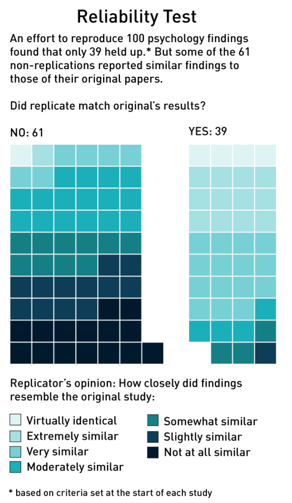
Replication in Psychology (cont.)
Some more suprising results from the replication project:
- 97 % of original studies had significant results (p < 0.05) - But only 36 % of replications had significant results
- 47 % of original effect sizes were in the 95 % confidence interval of the replication effect size
- Replication effects (Mr = .197, SD = .257) were half the magnitude of original effects (Mr = .403, SD = .188)
The Decline Effect
Idea that effect sizes tend to decrease with replication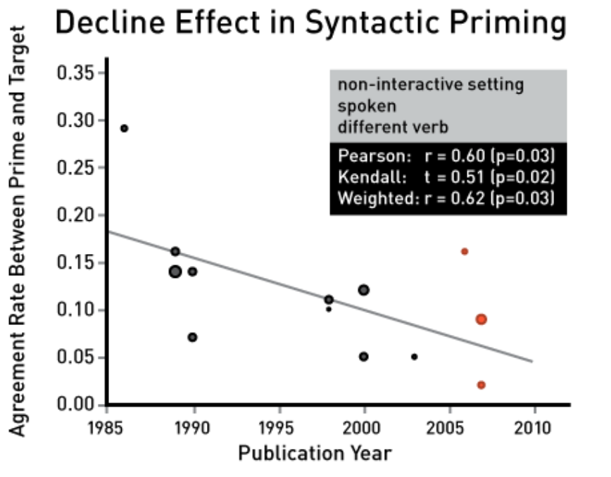
Richard Kunert looked at articles about syntactic priming- This was a theory pioneered by Kathryn Bock in an 1986 arcicle in the journal _Cognitive Psychology_- The idea is that language users choosing between sentence structures will unconciously adopt a structure that they just heard
The Decline Effect
Suspicions of Science
Replication efforts, along with some high-profile discredited results, have led to a culture that’s suspicious of science as a whole
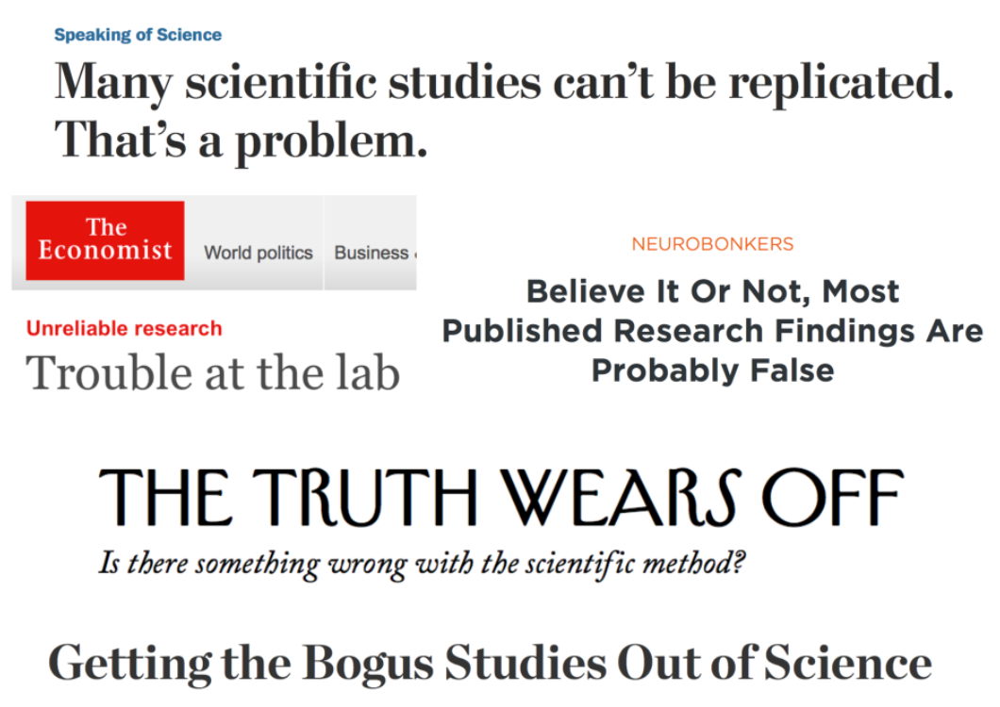
What is the problem?
Is this a problem with health science and psychology? - Unfortunately, most other fields just haven’t undertaken large-scale reproduction efforts - Eg. Brooks et al. write in Empirical Foundations of Computer Science about the pressing need to replicate experimental computer science studies
Is this just a problem with academic journals? - Hopefully, the examples of cancer research and software development show that companies rely on academic studies to develop products - As we’ll see, the underlying factors that lead to a crisis of reproducibility aren’t unique to academic journals - If anything, academic journals still set a good example for research; problems may be even worse in industry
Conclusion
This week, we’re going to explore the factors that contribute to the reproducibility crisis
- First, we’ll look at factors within an individual study that may inflate the Type I error rate
- Second, we’ll look at the issues that affect entire research fields when multiple teams work on similar projects
Ultimate goal: Understand intricacies of the scientific method and become a more responsible consumer and practitioner of research
Reproducibility for a Single Study
- We want our Type I error rate to be a manageable 0.05
- But some high-profile examples five the impression that actual error rates may be much higher than this
Example: Feeling the Future
Daryl Bem, “Feeling the Future: Experimental Evidence for Anomalous Retroactive Influences on Cognition and Affect” Journal of Personality and Social Psychology (JPSP). - Nine separate experiments conducted to see if individuals could predict future events - Over 1,000 subjects
Feeling the Future
Feeling the Future: Results
Under the null hypothesis that subjects could not predict the future, we would expect them to select the right door 50 % of the time
- For erotic pictures, subjects were right 53.1% of the time , which was statistically significant
- For non-erotic pictures, they were right 49.8% of the time (non-significant)
- In fact, Bem reported statistically significant results for eight of his nine experiments
- They all showed slight but significant evidence for ESP
- Bem’s paper caused a great deal of debate among psychologists - Bem was a respected researcher
- The Journal of Personality and Social Psychology is an upper-tier journal
Feeling the Future: Replication
- Other researchers immediately started replicating Bem’s studies
- These replications all failed to find evidence for ESP
- Many people wanted to know what went wrong and whether other studies could be trusted.
- You might wonder if Bem fabricated his data, but most observers don’t believe so.
- Most likely, he really believed his findings
Understanding -values
- How is it possible that Bem got so many significant p-values?
- Shouldn’t a p-value only be significant 5 % of the time, if the null is true? - You may wonder if p-values can’t be trusted
- Bem’s study gives us a good case study to help us understand exactly how the frequentist framework works.
The $p$-value you get from statistical software is valid only under very strict conditions: You collect one dataset, never look at it, then you conduct one statistical test in isolation.
- Then your Type I error rate will be 5 \% .Understanding -values (cont.)
Statisticians use _p-_value corrections to make sure that the Type I error rate stays at .05- It turns out that the p- values for a test (and statistical significance) can depend on some surprising things: - What other tests you run
- When you come up with your theory
- What you would have done if you had gotten different data
- We’ll talk about common corrections that frequentist statisticians use - And in doing this, we’ll also shed light on how a study like Bem’s could generate so many significant p- values
Multiple Comparisons
The Multiple Comparison Problem
The key to the frequentist framework is controlling error rates
- Anything that affects your error rates affects the decisions you can draw
- The more opportunities you have to make an error, the higher the error rate will be
- Example: If you perform several t -tests, the overall probability of an error is increased
Example: Green Jelly Beans
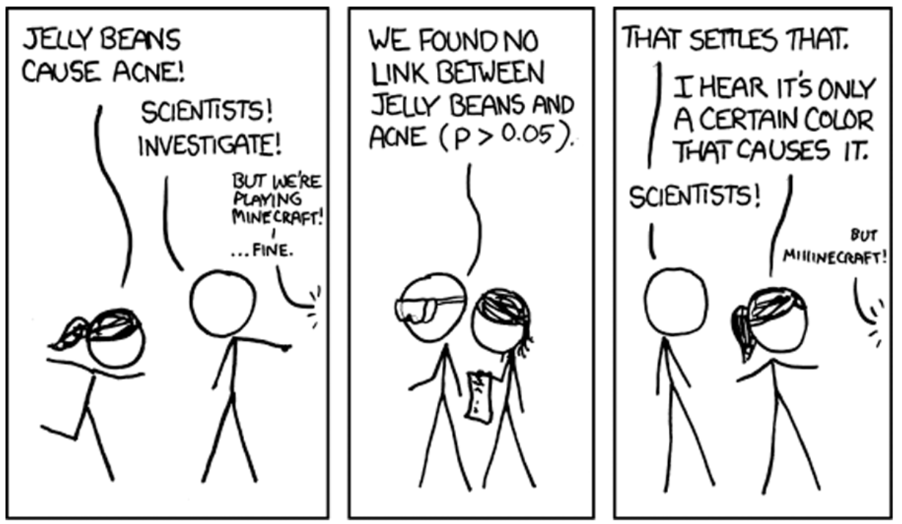
Example: Green Jelly Beans
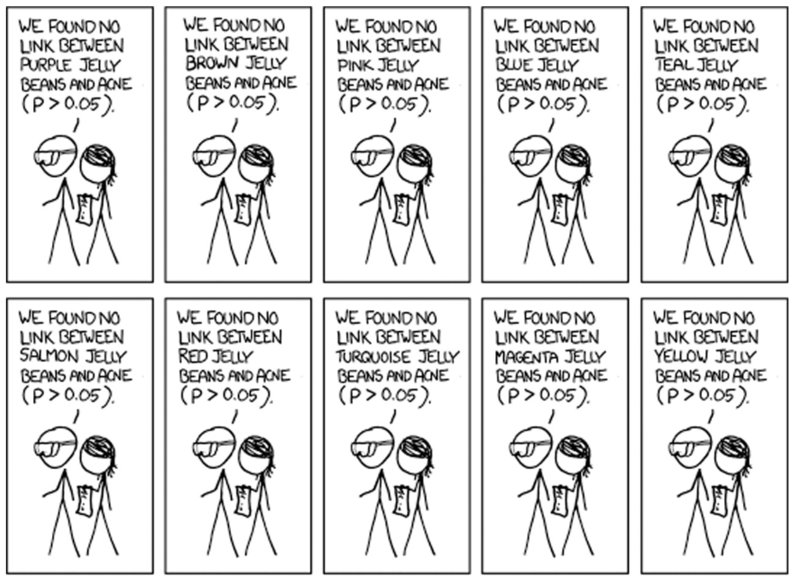
Example: Green Jelly Beans
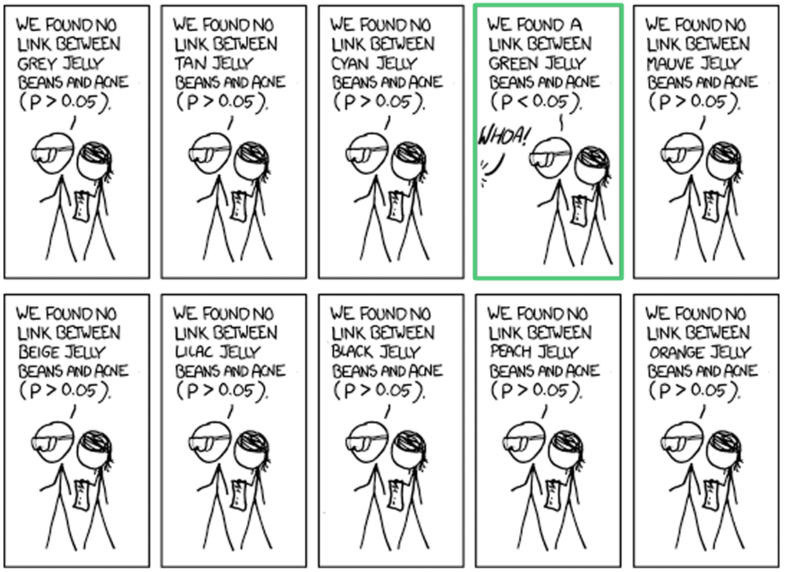
Example: Green Jelly Beans
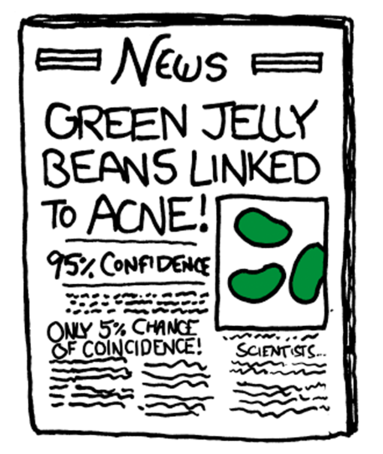
Family-Wise Error Rate
The probability, assuming all null hypotheses are true, of getting at least one Type I errorOne possible response: running a correction on your p -values, so the family-wise error rate returns to 0.05
Family-Wise Error Rate
- Simplest method - If you perform \(n\) comparisons, multiply each p -value by \(n\) , then compare to the normal value of 0.05
- Equivalently, leave the p -values the same, but check them against a threshold of \(\frac{0.05}{n}\)
- Considered conservative - Type I error rate may be quite a bit lower than 0.05
- The odds of a type 2 error are increased
- It may become difficult to have a significant result with a large number of comparisons
Family-Wise Error Rate
Depends on what other tests you run- Critics of Neyman-Pearson approach complain that this does not make sense - Shouldn’t the evidence from a test only depend on the results of that test?
- Shouldn’t the green jelly bean data be all that matter when studying green jelly beans?
- We should have much less trust in Researcher A’s conclusions since she was testing everything in sight
- We instinctively know that other tests matter because it could have easily been another color that was significant
What is a family?
This question is driven by theory - Example: The spectral dermatologist is not surprised that green jelly beans cause acne - If you believe this, you probably don’t feel like the other experiments have any bearing on the evidence gathered for green jelly beans - You would argue that your - value should not be adjusted - You have to decide whether to define your family of tests in terms of the theory - One factor to consider is when you came up with the theory
Planned vs. Post Hoc Comparisons
Timing of a Theory can make a difference in interpreting frequentist results
Post hoc- Making comparisons and coming up with compelling theory to support link between variables seeing data - Correction recommended for making comparisons
Planned- Announcing well-motivated theory before running study - Probably more convincing - Easy to do in regression framework - Could represent green jelly beans with dummy variable - Can incorporate other planned comparisons that you are interested in - No correction recommended (eg. not usually applied for estimating multiple coefficients in a linear regression)
Other Considerations
If you have other data that you don’t want to throw away: - Run the planned comparison for the theory at the nominal level - Separately run the post hoc tests wit ha correction
If you put several tests in your research paper but they seem to be testing totally different theories (eg. green jelly beans and classical ballet): - You test each but believe the mechanisms that link each to the outcome variable are unrelated - You still run an inflated risk of reporting at least one Type I error - Present each to the reader as separate experiments to avoid a correction that may be overly conservative
Deciding When to Correct
Different fields of research employ very different standardsClinical studies tend to use corrections quite a bit - Mistakes can be costly in fields like medicine - A disciplined approach is recommended by Moye (2008): - Correct all primary endpoints of a study to bring Type I error rate to 0.05 (confirmatory) - Do not correct secondary endpoints (supportive)
The field of economics rarely uses corrections - Transparency is emphasized - Theory should be presented clearly - All tests conducted should be reported
Takeaways
- The question of when to correct is contextual and often difficult to answer
- It is important to look beyond p- values - Did the researchers go looking for a specific effect, or are they fishing?
- What other results, including those from other studies, could be understood to fall in the same family?
- Has the hypothesis been supported by multiple studies?
- Decide how convincing the results are and whether you would run a correction yourself
Stopping Rules
A Common Scenario
- Research A gathers 30 subjects to see if his drug reverses hair loss
- He compares the treatment and control group and his t- test is not quite significant at the .05 level - Say p = .06
- The difference is in the right direction
- Researcher A realizes how close he is and gathers 10 more subjects for his study - Now he has a total of 40 subjects to test
- Maybe a nominal t -test comes out significant, p = .04
A common Scenario (cont.)
Does this result convince you that the drug works? - What’s the Type I error rate? - Assuming the drug has no effect, there’s already a 5 % chance of a Type I error after 30 subjects - Testing again after 40 subjects can only increase the risk of a Type I error - Research A cannot test his 40 subjects without a correction - Since he already accrued a 5 % chance of error, he cannot reject the null, no matter how many more subjects he gathers!
A better strategy: correct both -values, at 30 subjects as well as 40 subjects, so that the total Type I error rate is 5%
Another example study
Suppose Researcher B gathers all 40 subjects at once and gets the exact same data A ( p = .04)
- Researcher B does not need a correction and can reject the null hypothesis
- Researcher A has the same data as Researcher B, and A did not actually stop gathering data after 30 subjects
The fact that Researcher A would have stopped if his first -test was significant changes our interpretation of results - A critic of the Neyman-Pearson approach might say that this doesn’t make sense – our interpretation of the data depends on events that didn’t actually happen - Shouldn’t the same data always lead to the same conclusion? - But shouldn’t the fact that research A has more chances to get a significant result make you doubt his results?
A Determined Researcher
Suppose that Research A kept going:
- He recruits 30 subjects and computes a t -test at nominal level
- If the t -test is non-significant, he collects 10 more subjects and runs a t -test on the whole group
- If his last t -test is non-significant, he keeps repeating
- Researcher A is guaranteed to get a significant t -test eventually - It’s a basic mathematical property of infinite sequences
- This procedure has an alpha of 1:you always knew Research A was going to come and claim significance, so there’s no information in this fact
Another Explanation
Remember that we’re computing the probability of our data (or more extreme data), given our null hypothesis - This is an objective probability, depending on the collective rather than the single experiment - We imagine an infinite sequence of hypothetical experiments conducted assuming the null hypothesis
Each experiment is conducted according to the stopping rules the experimenter uses - Researcher A: some experiments end after 30 subjects, some after 40, and so forth - Researcher B: all experiments end after 40 subjects
Another Explanation (cont.)
Events that don’t happen are important because we have to see how likely our results were compared to all the other results that are possible - This tells us how significant the data is - Events that don’t occur can affect what your data is telling you - Clever critics poke fun at this paradoxical result
Values and Kung Fu
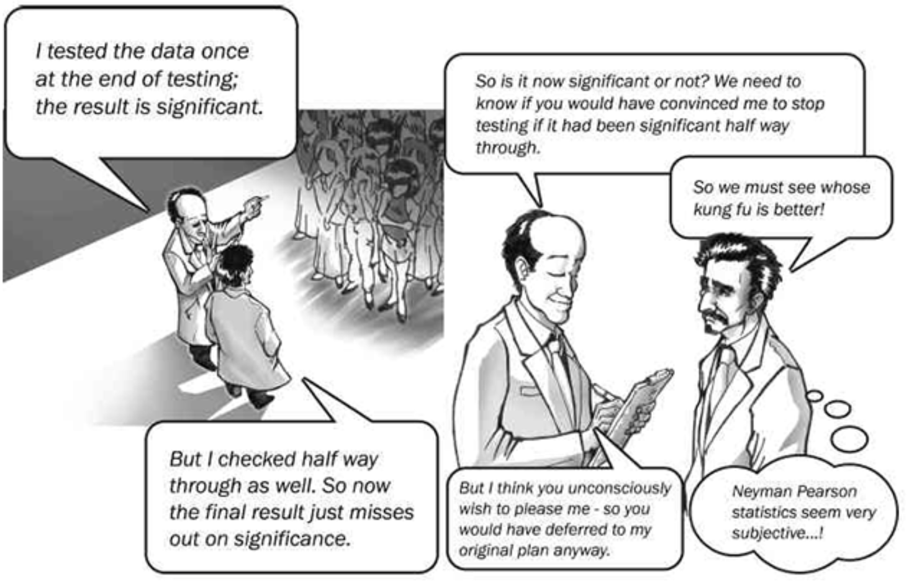
Values and Kung Fu
In this comic taken from Dienes, two scientists realize after the fact that they have different stopping rules
- The final p- value will have to be corrected if the experiment would have stopped halfway through if the second scientist’s test was significant - But would it have stopped?
- It seems the scientists didn’t agree to this in advance
- They try to figure out whether the experiment would have stopped
- The result depends on who would convince the other whose kung fu is better!
- Maybe the kung fu outcome will depend on the researchers’ desires to please each other - Those desires are unconscious, so how can we compare them?
Takeaways
- The sensitivity of frequentist statistics to events that don’t occur is controversial
- Many critics, Bayesian statisticians in particular, think that the same data should always lead to the same conclusion
- You can decide if this is a strength or weakness of the approach, but know the intuition behind why events that don’t occur may change your understanding of the data
In Defense of Frequentists
In Defense of Frequentists
There are certainly many quriks to the Neyman Pearson approach - It has many critics - What we conclude from a test may depend on several things - This is unsettling to many people
But take a moment to think of how clever all this is - We want a system for learning truths about the world, knowing that we may not agree on how likely hypotheses are - We may not even be able to imagine what alternate hypotheses are out there!
In Defence of Frequentists (cont.)
But take a moment to think of how clever all this is - We define probability in terms of long-run frequencies - Even though we can’t discuss the probability that our null is true, we know the probability of accidentally rejecting it if it is true - We’ve managed to define our error rate in terms of long-run frequencies - We have a system that makes very minimal assumptions about the world, just looking at one hypothesis in isolation - The p- value is a measure of how consistent the hypothesis is with the data - p- values depend on researcher intentions, stopping rules, etc - These are all responses to things that inflate our error rate - There will always be Type I errors - Science progresses when we come up with hypotheses that survive repeated testing
Researcher Degrees of Freedom
Back to ESP
Now that we have seen some of the complexity that comes with correctly applying the frequentist framework, what does that tell us about Bem’s ESP study? - We can’t always interpret a nonimal p- value we get from statistical software directly - The statistical significance of our data depends on factors like: 1. Any other tests we’ve conducted on the same data 2. When we came up with our theory 3. What our rules are for when we stop collecting data - We can find elements similar to all three of these in Bem’s procedure
Stopping Rules
Bem himself said that he peeked at the data as it was coming in - Wagenmakers et al. noticed that the number of subjects in each experiment was negatively related to the effect size - This is a pattern we expect to see when a research uses an optional stopping rule
Collecting more participants as long as a test is non-significantSince Bem used an optional stopping rule, we know that his values cannot be interpreted at a nominal level - We would need some sort of correction - It might be impossible to design one without knowing exactly how Bem determined when to stop each experiment
Multiple Comparisons
The hit rate on control trials was at chance for exposure frequencies of 4, 6, and 8. On sessions with 10 exposures, however, it fell to 46.8%, t(39) = -2.12, two-tailed = .04
Here, we clearly have four comparisons - One turned out slightly significant at the nominal level - We know that these p- values require a correction
At other times, we’re led to suspect that Bem performed comparisons other than the ones he published - Consider that Bem’s Experiment # 1 tested not just erotic pictures, but also: - Neutral pictures - Negative pictures - Positive pictures - Pictures that were romantic but non-erotic
Multiple Comparisons (cont.)
Only the result for erotic pictures appears in the paper - Did Bem not examine the other categories? - Or did he look at the data and choose the one that was most promising?
Bem also mentions other variables that he discarded for having no effect - Openness to experience - Belief in psi - Belief that one has had some psi experiences in everyday life
__ {All in all, this amounts to a large number of comparisons}__
Post Hoc Comparisons
It seems that Bem’s comparisons weren’t driven by a pre-existing theory - Instead, he seemed to come up with theory to match his results - In Experiment # 5, Bem reports a significant t- test for women, but not for men - Not clear why he wanted to test for gender in the first place - Bem does offer some analysis of the gender difference:
This analysis comes after the data is analyzed - Since the theory is applied post hoc, most statisticians would see this as a reason to recommend a correction
Glancing at Data
- Bem may not have performed a formal t- test on every category
- Instead, Bem may have merely glanced at the data to see which variables looked most favorable to his theory
- But merely glancing at data is enough to inflate Type I error rates - You don’t have to perform a statistical test
Glancing at your data is enough to lead you to the most promising tests, implicitly discarding others - If you’re glancing at data and using your gut, it is next to impossible for a statistician to choose an appropriate correction for your p- values - How many comparisons have you really conducted by looking at the data and looking for values that jump out at you?
__ {Bem made many choices along the way that could have helped create a small value}__
Researcher Degrees of Freedom
Consist of all the choices that a researcher makes in the course of an analysis- When should we stop collecting data?
- Which observations should be excluded?
- Should we take a log transform of a variable? Make it binary?
- Which parametric or non-parametric test should we run?
- What control variables should we include?
- Should we use robust standard errors?
We usually can’t answer these questions ahead of time - Hundreds of choices go into a moderately sized analysis - Each degree of freedom is an opportunity to create a smaller p- value - The sum total of many researcher degrees of freedom can be dramatic
Researcher Degrees of Freedom (cont.)
Here’s how Bem describes his approach to data:These are a lot of degrees of freedom, so we shouldn’t be at all surprised to find significant values - You could call this p- hacking
Exploratory vs. Confirmatory Research
This is not to say that exploring a data set is bad - Exploratory analysis is a critical part of research - However, we must understand how to interpret statistical results in context - Many researchers, especially in experimental fields, recommend distinguishing between two types of research
Getting to know a data set, looking for patterns, generating hypotheses (creativity is good) Testing data with a specific theory in mind. You want to make as many decisions as possible before you see your dataExploratory vs. Confirmatory Research (cont.)
You shouldn’t use the same dataset for exploratory analysis and confirmatory analysis - If possible, it’s ideal to split your dataset and save some for confirmation - These are ideals that we aspire to. It’s not always possible to split your dataset
If you have to combine some elements of exploration and confirmation, think how to mitigate risk of inflated error rates: - Have a specific research question - Report multiple specifications - Document the choices you make so readers can perform their own analysis
Replication
Different teams performing studies to address the same question (or similar questions)- In a well-functioning research field, studies are replicated
- Replication is our last line of defense against Type I errors
- Bem’s study is a good example - After published, several teams immediately undertook replication attempts
- Virtually all of these failed to reproduce Bem’s evidence for ESP
Example
Ritchie, Stuart J.; Wiseman, Richard; French, Christopher C.; Gilbert, Sam. (March 2012). Gilbert, Sam, ed. “Failing the Future: Three Unsuccessful Attempts to Replicate Bem’s ‘Retroactive Facilitation of Recall’ Effect”. PLoS ONE.
From their abstract:Example (cont.)
Replication isn’t just a defense against poorly constructed studies - There will always be Type I errors - Under the best circumstances, the Type I error rate will be .05 - Replication is what lets us eventually correct these errors - It is a central component of the scientific method
Another replication team summed it up by quoting Karl Popper, a philosopher who laid down early intellectual foundations for modern research:
Popper (1959–2002) defined a scientifically true effect as:Obstacles to Replication
Unfortunately, as a crucial as replication is, there are significant obstacles to conducting replications - Recall the replication attempt by Ritchie, French, and Wiseman - Three journals rejected their paper on the grounds that it was a replication ( The Journal of Personality and Social Psychology, Science Brevia, and Psychological Science) - A fourth journal, the Britich Journal of Psychology , refused the paper after reservations from one referee - That referee was later confirmed to be Daryl Bem
Unfortunately, the difficulty these researchers had in publishing their replication attempt is not atypical - Makel, Plucker, and Hegarty estimated that about 1.07 % of published psychology studies are replications
Obstacles to Replication (cont.)
Brian D. Earp and Jim A. C. Everett enumerated five reasons replication attempts are uncommon in psychology: 1. Independent, direct replications of others’ findings can be time consuming for the replicating researcher 2. Replications are likely to take energy and resources directly away from other projects that reflect one’s own original thinking 3. Replications are generally harder to publish (in large part because they are viewed as being unoriginal) 4. Even if replications are published, they are likely to be seen as ‘bricklaying’ exercises, rather than as major contributions to the field 5. Replications bring less recognition and reward, and even basic career security, to their authors.
There are some initiatives to encourage more replication but, unfortunately, it remains far too rare in most fields
Meta-Analysis, Part One
If we’re lucky enough to work in a field in which replication occurs, how do we weigh the evidence for a hypothesis? Eg. What if there are six replication attempts and three support the original findings? - It doesn’t make sense to take a vote, since we only expect 5 % of studies to find evidence if the null is true - Furthermore, what if some studies are just bigger than others? - Shouldn’t they count for more?
Instead, we can conduct a meta-analysis
Meta-Analysis, Part Two
A statistical technique for combining evidence from a group of studies
- It's important that all the studies report the same measure of effect size for the phenomenon they are trying to measureThe objective of a meta-analysis is to create a single pooled estimate of the effect size - This is essentially a weighted average of the effect sizes reported from each study - The weighting usually relates to the inverse of the variance - This means that studies with a larger sample size will generally count more toward a pooled estimate
Meta-Analysis, Part Three
A meta-analysis is itself a research study
- It has a lot of the same elements that any other study does
Researchers must first specify the procedure for determining which studies should be included in the meta-analysis - These are the raw data - It is critical to have a systematic method for identifying data points - The criteria for which studies are excluded should be as objective as possible
There are different statistical methods for combining effect sizes into pooled estimates - Researchers can use fixed effects and random effects models - Those are beyond the scope of today’s lecture
Forest Plot
- The selected studies are usually shown on a forest plot
- Each row shows an estimated effect size, along with 95 % confidence intervals
- The diamond represents the pooled estimate, along with a 95 % confidence interval
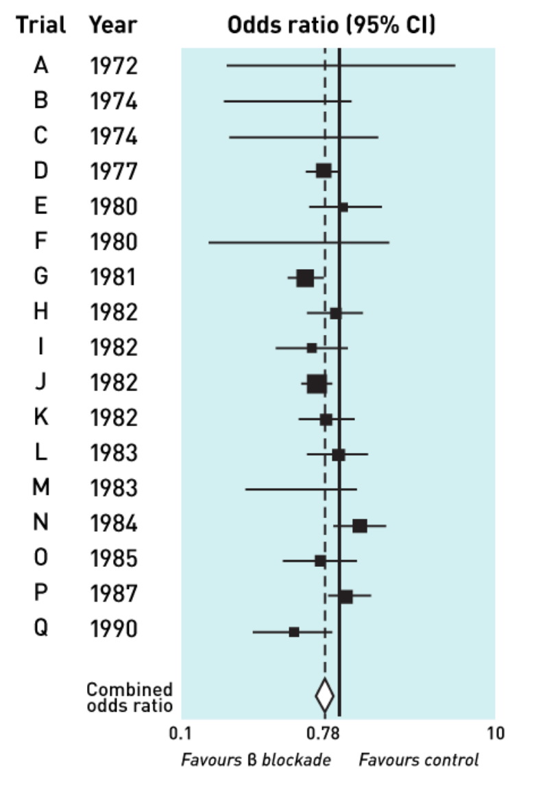
Conclusion
We’ve only begun to scratch the surface: You can take an entire class about meta-analysis
Meta-analysis shifts our focus away from one study to groups of studies - This is the most important takeaway - Each study is just one data point - An informed reader should evaluate it in that context
The File Drawer
Refers to all the negative results researchers get that don't get publishedBluntly, everyone likes positive results - Includes journal editors - Positive results mean that you detected a relationship - May support a theory - Helps you write an exciting conclusion - Can mean that your product works
Negative results just don’t generate as much excitement - You don’t accept the null, you just fail to reject it - Instead of being published these negative results just sit in a file drawer and nobody finds out about them - This is also called publication bias
The File Drawer (cont.)
Dickersin, Chan, Chalmers, Sacks, and Smith conducted a survey of 156 medical researchers - Out of the 1041 published RCTs , 55 % showed a positive result - Out of the 271 unpublished RCTs, only 14 % showed a positive result - Authors of unpublished RCTs were also asked why they thought their study was unpublished - Results shown in Table 3:
RCT Status and Reasons for Not Publishing
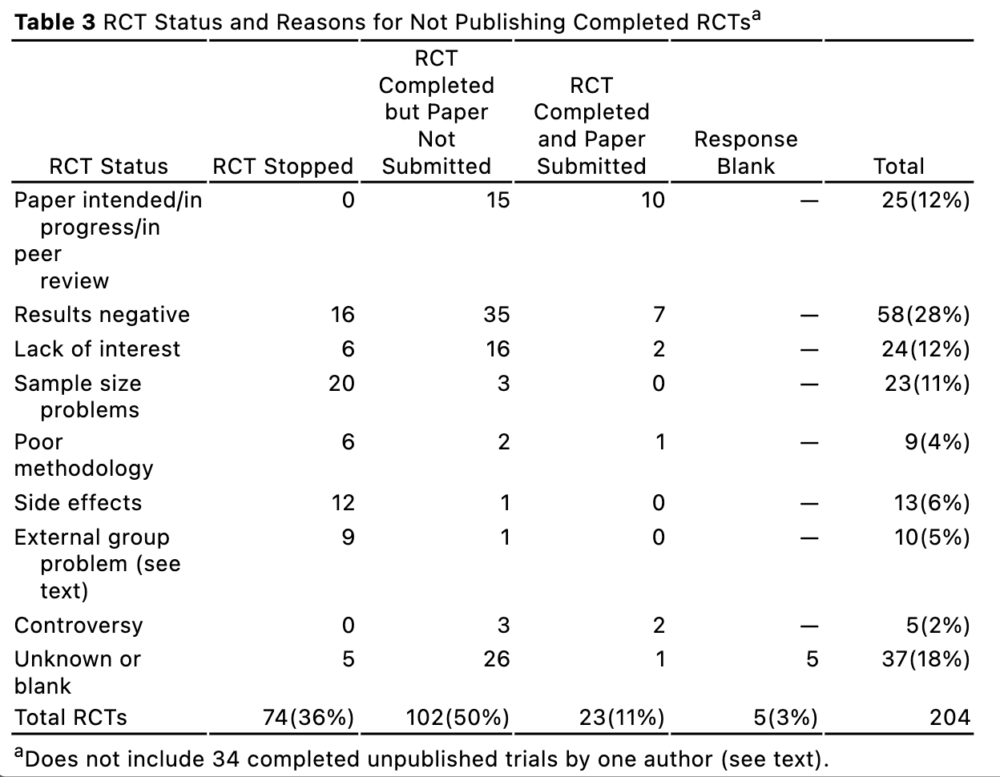
Effects of the File Drawer
Why is the file drawer bad? - This is closely related to the issue of multiple comparisons - Remember that your interpretation of a statistical test depends on what other tests have been conducted - That’s true in a single study, but its also true when we’re talking about multiple studies - Say you read a paper that finds a statistically significant effect - Eg. that eating kale improves reaction time - What if you discover that five other research teams tested kale for reaction time and couldn’t reject the null? - Or maybe they tested broccoli, asparagus, lettuce, and brussels sprouts, but only the kale team found a significant results and only that team managed to publish - From what you know about multiple comparisons, this context could be important for understanding the result
Detecting Publication Bias
The file drawer effect is also a problem when we conduct a meta-analysis - If there’s a publication bias, the studies that are published will tend to be those that find larger effect sizes - As a result, our pooled estimate will be biased upward - This is the GIGO principle: garbage in, garbage out
If we have enough studies that measure the same effect, we may be able to detect publication bias - This is done with a funnel plot
The Funnel Plot
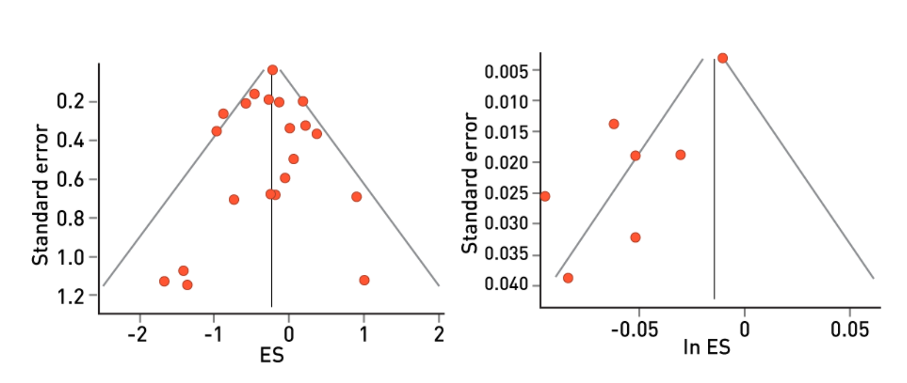
Funnel Plot: All studies published
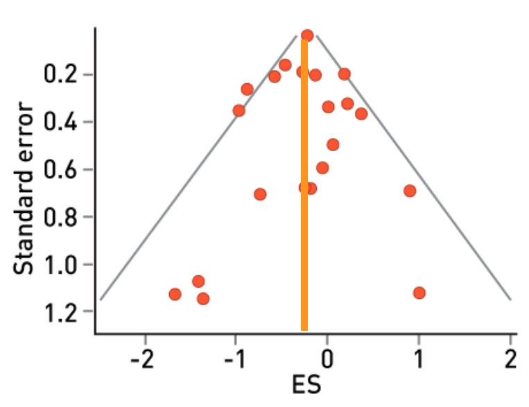
Funnel Plot: Publication Bias
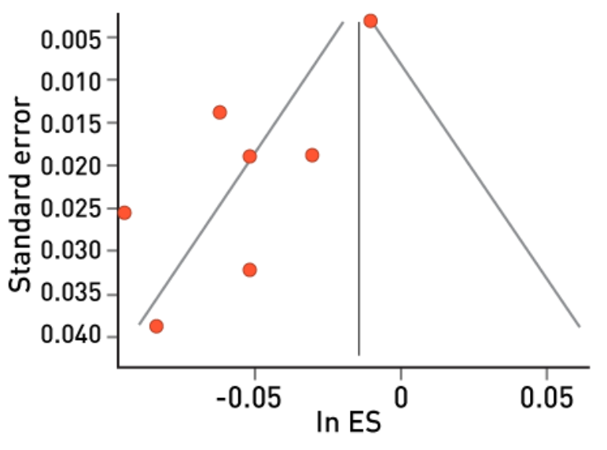
Example: Stereotype Threats
Flore P.C., & Wicherts J.M. (2015). Does stereotype threat influence performance of girls in stereotyped domains? A meta-analysis. J School Psychology. - Authors asked whether a stereotype threat would affect women’s performance on mathematics tests - Stereotype threat: a member of a stigmatized group is exposed to a negative stereotype about that group - Over 100 studies were conducted on this question - In a typical study, a treatment group of women might be presented with a written statement that men do better on math tests - Their performance on a math test would then be measured - A control group would not get the stereotype threat - Four out of five meta-analyses confirmed the existence of an effect
Example: Stereotype Threats (cont.)
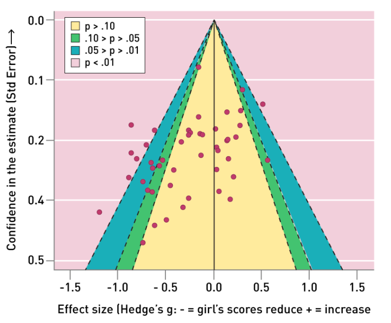
- Flore and Wicherts examined the data to evidence of a file drawer effect
- The funnel plot shows a distinctively non-symmetrical shape
- This is supported by a number of statistical tests
- The authors conclude that there is not evidence to establish the existence of the stereotype threat effect
- They advocate for a large-scale pre-registered study to address the problem
Conclusion
There have been some high-profile efforts to mitigate the file drawer problem - Some journals have a policy of accepting negative results - Other repositories for negative results have sprung up - Pre-registration of studies can help us by at least telling us how many studies are conducted
The file drawer remains a major problem and something you should keep in mind when reading research
The Positive Predictive Value
We motivated this discussion by describing the reproducibility crisis. - Why are so many published findings not reproducible? - We spent a long time talking about Type I errors - Why do Type I errors occur more often than we expect? - Why do Type I errors persist in the literature? - The Type I error rate is important, but it’s not the end of the story
We’re ultimately interested in the fraction of published results that are false, and that’s not the same as the Type I error rate
The Positive Predictive Value (cont.)
Remember that Type I error rate is the probability of getting a significant result, assuming the null is true (research hypothesis is false) - We’re interested in the probability that research hypothesis is false, given that we got a significant result: the probability inverse - If the set of published significant results, some come from studies that successfully find evidence for a true research hypothesis - But others are Type I errors when the hypothesis is false - We call the fraction of significant findings that correspond to true relationships the positive predictive value (PPV)
The probability, given that a research hypothesis is supported, that it is actually trueJohn Ioannidis’s Model, Part One
John Ioannidis provides a simple model to explain the difference between the Type I error rate and the positive predictive value - Say researchers are testing a set of \(c\) possible relationships - The null hypothesis is always that there is no relationship - The research hypothesis is that a relationship exists - Let \(R\) be: \(\frac{ \text{Number of true relationships} }{ \text{Number of false relationships} }\) - Let’s further assume that all relationships get tested once, with - \(\alpha=\) Type I error rate - \(\beta=\) type 2 error rate
John Ioannidis’s Model, Part Two
Let $t$ be the number of true relationships. Then, $c-t$ is the number of false relationships. Then, $R$, the ratio of true to false is: $R=\frac{t}{c-t}$. Multiplying and distributing,
$(R\cdot c) - (R\cdot t) = t$
Solving for $t$, the number of true relationships is,
$t = \frac{(c\cdot R)}{R+1},$
and solving for $c-t$ the number of false relationships is,
$\frac{c}{R+1}.$John Ioannidis’s Model, Part Two (cont’d)
- For the \(t\) true relationships, \((1-\beta)\cdot t\) are supported
- Number of supported true relationships: \(\frac{(1-\beta)\cdot(c\cdot R)}{R+1}\)
- For the ( \(c-t\) ) false relationships, \(\alpha \cdot(c-t)\) are supported
- Number of supported false relationships = {\(\frac{(\alpha \cdot c)}{R+1}\)}
John Ioannidis’s Model, Part Three
\(\frac{\left[(1-\beta)\cdot R+\alpha\right]\cdot c}{R+1}\)
PPV is the number of supported true relationships divided by the total number of supported relationships,
$\mathbf{PPV}=\frac{(1-\beta)\cdot R}{(1-\beta)\cdot R + \alpha}$- Large \(R\) (most true) + small \(\beta\) (high power) \(\rightarrow\) high PPV
- Small \(R\) (most false) + large \(\beta\) (low power) \(\rightarrow\) small PPV
Unlikely Results
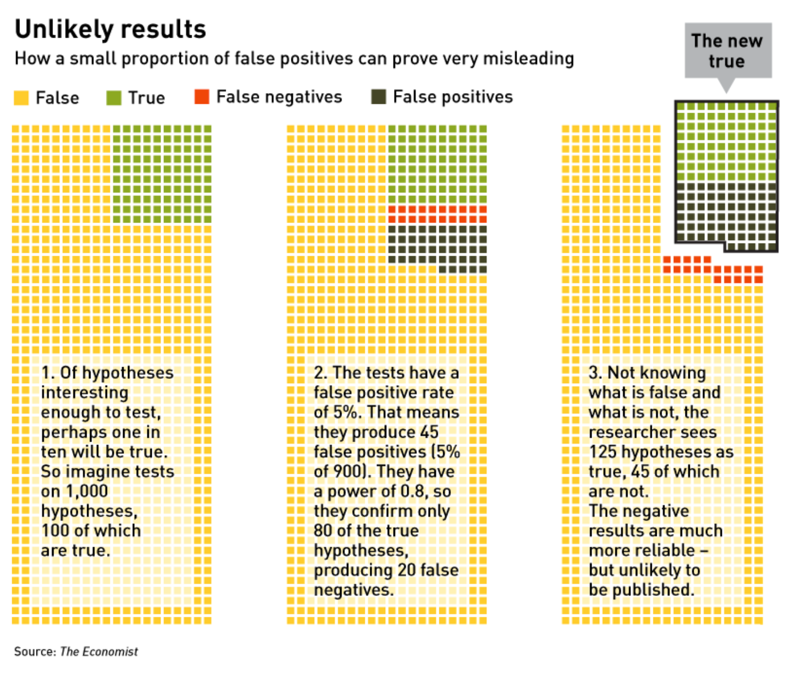
Unlikely Results
Conclusion
What is R? How many of the relationships we test are actually true? - It’s hard to know, and it depends on the field you work in - If you’re testing different genes to see which ones can have a beneficial effect against some disease, the number of true relationships could be extremely small - If you’re working with socio-demographic variables, relationships are everywhere - It’s usually implausible to believe that two variables have exactly zero relationship - Statistician Andrew Gelman claims he’s never made a Type I error - On the other hand, he does have to worry about a type S error: supporting a relationship but giving it the wrong sign - Eg. claiming there’s a positive relationship when the real relationship is negative - Think about the field that you work in and how this model might inform the way you interpret results
More Replication
Several authors have argued that we should start with students - Make replication a component of method classes - A lot of students conduct class projects that don’t have enough content for publication, but they might be harnessed to replicate established findings - Students can also be trained on how to conduct meta-analysis
Journals have a role to play, too - They can place a higher value on replication attempts - Some journals are doing a good job (for example, the journal Social Psychology recently devoted a special issue to replication studies
More Replication (cont.)
Authors can also make it easier to replicate their work - Publishing their data and their code - A number of online repositories are trying to help with these issues
In the end, the culture has to change - From students to the most famous researchers, everyone needs to value replication - Psychology and medicine are now ahead of the game - After suffering a major loss in confidence, these fields are really more willing to reform
Pre-registration (Part 1)
The idea is that researchers publish their research plans before gathering data - All methods of analysis in as much detail as possible - All the tests that the researchers will run
This helps in several ways 1. It ties researchers’ hands, - Fewer researcher degrees of freedom - Less chance of Type I error inflation 2. Ensures that we hear about studies, so negative results are less likely to fall into the file drawer 3. Also encourages researchers to think clearly about proper research design ahead of time
Pre-registration (Part Two)
Some journals in psychology and medicine are working to facilitate this with registered reports - Authors submit their research plans for peer review before collecting data - Once properly reviewed, the authors get a provisional guarantee that their results will be published, whether negative or positive - This reflects the fact that the best designs aren’t necessarily the ones that lead to positive results; we should be able to judge them ahead of time.
One problem is that it can be quite difficult to specify everything that you’ll do in executing a study - There are just too many small decisions that have to go into an analysis
Pre-registration (Part Three)
It can help to begin with a small pilot study - This is a chance to write your code and refine your protocol - Once this is done, you get your new data and plug it into your analysis script - This is a great way to limit researcher degrees of freedom and make a study easier to replicate
Fewer Values
Values have taken a surprising amount of heat recently - A lot of researchers have spoken out, saying that we shouldn’t be using p- values at all or that we should de-emphasize them - There’s a general sense that p- values are problematic
A common argument is that a value does not capture all the things that are important in interpreting a research result
Fewer Values (cont.)
The cutoff at .05 is arbitrary - Relying on it causes publication bias and creates incentives for researchers to hack their p- values - It’s possible that using confidence intervals will help shift the culture away from one that prioritizes positive results, and more toward one that focuses on replication and meta-analysis.
At the same time, the problem isn’t exactly values; it’s the lazy use of values - p- values are a summary measure - They are a way that we can always describe the agreement between a statistic and a hypothesis - There’s danger other summary statistics will also be misapplied - No matter what, researchers have to consider the wider research context and evaluate results critically
I encourage you to form your own opinion on this debate
The Nature of Research
As you can see, there’s no one solution that’s going to solve the replication crisis
Advancing scientific knowledge is hard
Our tools for gaining knowledge are imperfect - We have to work through human institutions - We have limited resources - There’s a lot to learn to conduct research responsibly
We have to be constantly vigilant and examine our methods - Be open to reform